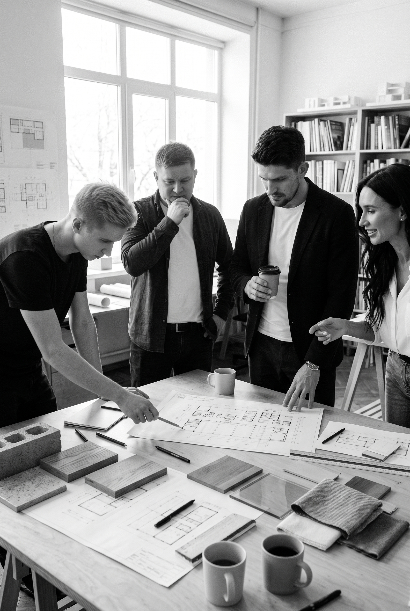

FORMULA BUREAU
Founded in 2017 in Kyiv, Formula Bureau has evolved from a local architectural practice into an international design bureau. Our portfolio ranges from small cafés and private residences to large restaurants, medical facilities and full-scale architectural developments across Ukraine and beyond. Every project begins with context — site, light, function, and the people who will inhabit it. With a team of architects, designers and engineers, we oversee every stage — from concept to realisation — guided by the same principle that started it all: to create spaces that feel essential, timeless and human.

FORMULA BUREAU
Founded in 2017 in Kyiv, Formula Bureau has evolved from a local architectural practice into an international design bureau.
Our portfolio ranges from small cafés and private residences to large restaurants, medical facilities and full-scale architectural developments across Ukraine and beyond.
Every project begins with context — site, light, function, and the people who will inhabit it.
We translate these elements into architecture defined by clarity, proportion and emotion — spaces where material, detail and atmosphere form one coherent language.
With a team of architects, designers and engineers, we oversee every stage — from concept to realisation — maintaining precision and integrity throughout the process.
Today, with our office in Bratislava, we continue to expand across Europe and other parts of the world, guided by the same principle that started it all: to create spaces that feel essential, timeless and human.